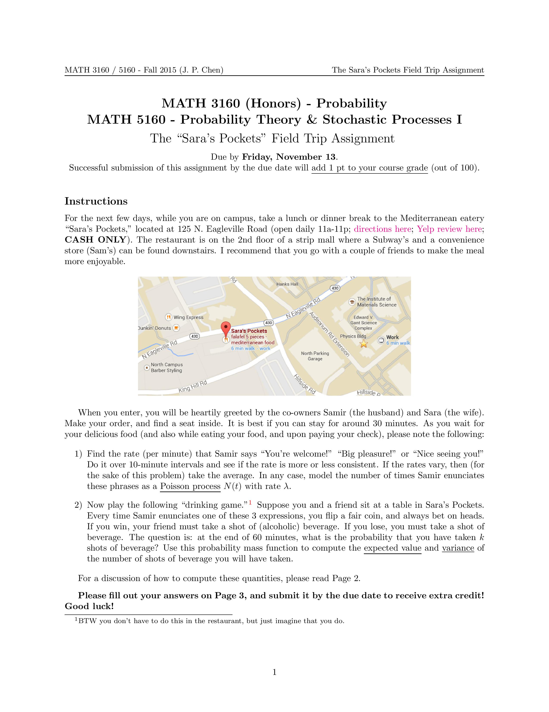
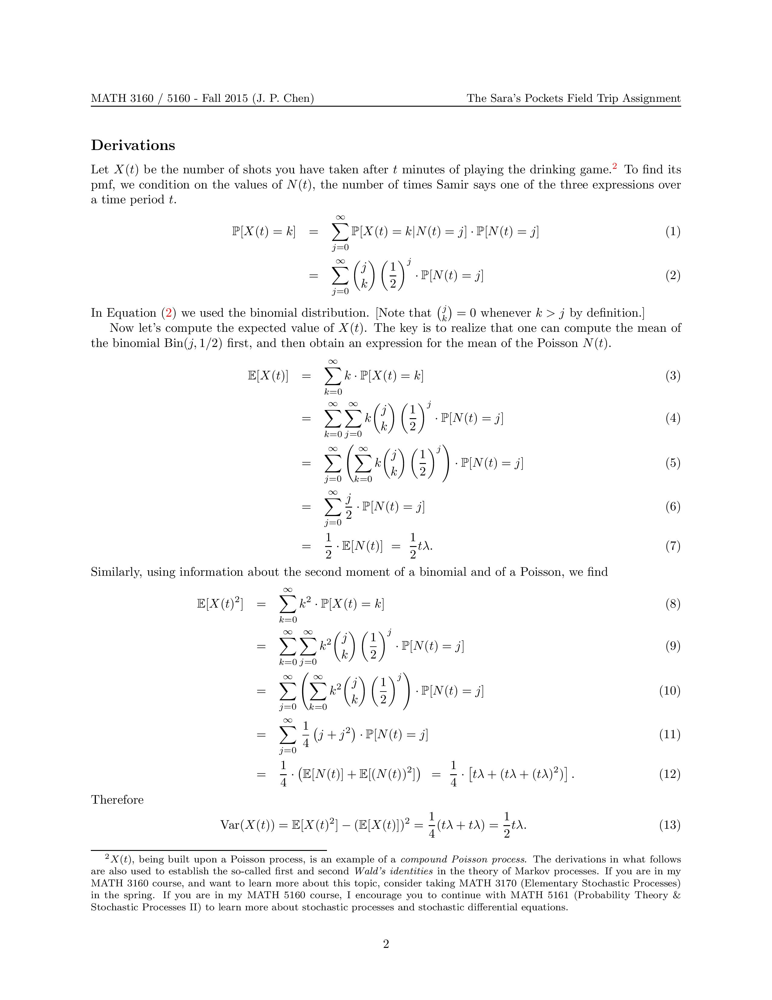
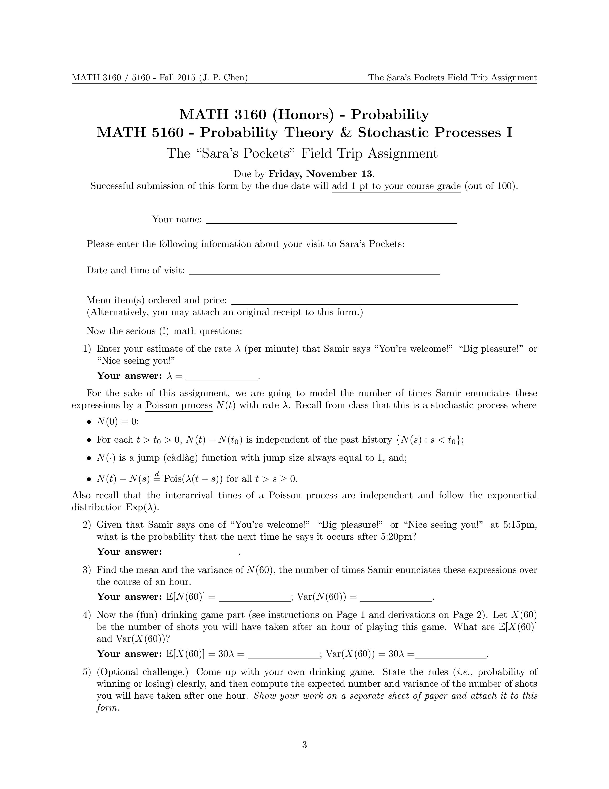

|  |  |  |
Math concepts used: (Simple and compound) Poisson processes, Wald's identities (for martingales), exponential random variable.
Background: In October 2013, two months into my job at UConn, a friend took me to Sara's Pockets (Yelp review here) for lunch. It is the only Mediterranean restaurant within a 1-mile radius of UConn, and very close to my building. Coincidentally I was teaching the Poisson distribution the same week in my very first iteration of MATH 3160. I remembered nothing from the lunch, except for the very nice homemade food, and Samir (Sara's husband) happily greeting his customers with shouts of "You're welcome!" "Big pleasure!" "Nice seeing you!" I asked my friend if this was normal. He replied in the affirmative. Then on the way back to the office, the idea was kindled...
Relevance: The Poisson random variable is described in Ross (the textbook) as the random variable which models the number of events that occur, such as the number of crimes, number of accidents, etc. This is of course correct but not "spicy" enough in my opinion. By the same token, I can also claim that the number of times Samir enunciates any of those three slogans is modeled by a Poisson distribution; or more precisely, a Poisson process if one regards the "enunciation process" as a stochastic process. So okay, this is not much different from counting sheep. But then I was reminded of the all-too-famous drinking games people play when they watch a sporting event on TV: pick on your (un)favorite announcer and take shots of alcohol whenever s/he says something that you expected (not too different from bingo in some sense). And now this makes a juicy problem: You go to Sara's Pockets, listen to Samir enunciate his favorite slogans before, during, and after you savor your meal, and (secretly) play the drinking game that you designed for yourself.
What I did: In Fall 2013, I wrote a practice exam problem for students based on my visit to Sara's Pockets. Not many students recognized the restaurant, but those who did immediately giggled upon reading the question, calling the description "spot on." The next semester, when I taught Stochastic Processes (MATH 3170), I expanded the problem and made it into a "field trip assignment." Students would receive extra credit if they went to Sara's Pockets (receipts need to be attached), empirically measured the rate at which Samir enunciated those three phrases, and completed the problems indicated on the assignment. This practice has since been continued with my MATH 3160 course, as well as my graduate probability theory course (MATH 5160), hence the heading of the assignment.
Aftermath: Of course this was all done in fun, to help students learn about the Poisson process using a live example, and also as a way to
support a local business. However, for three straight semesters (Fall 2013 through Fall 2014) I have warned students not to reveal (their intention to do) the assignment
to the owners, Sara and Samir.
In Spring 2015 (April 2015 to be precise), I again distributed the assignment, but somehow forgot to remind students to keep the affair hush-hush. One student decided to
bring his parents along to Sara's Pockets on a Sunday, and to complete the assignment in the process. For much of their visit, Samir was in the backroom (kitchen), and Sara
did much of the greeting. My student was looking for Samir, but did not want to call him out. Sara saw the student's puzzled face and asked if s/he needed anything. (To my
horror,) the student then proceeded to pull up (!) the actual assignment for Sara to see, with every instruction printed. Needless to say my whole scheme fell through...
Later the same week, I visited Sara's Pockets for lunch. Upon entering the first thing Sara said to me was, "Are you the math professor?" I sheepishly admitted my guilt and
profusely apologized to her and Samir. Thankfully, they took the whole gag in strides, and said that they would love me to advertise their restaurant to my students. So the
tradition shall continue, secretly or not...
Acknowledgements: I am very grateful to Sara and Samir Saad for graciously sharing their enthusiasm and homemade food with the UConn community.
Melancholy post-script (02/15/2017): Friends confirmed that Sara's Pockets has closed permanently, as of early 2017.
{kind=link}
{kind=link}
{kind=link}